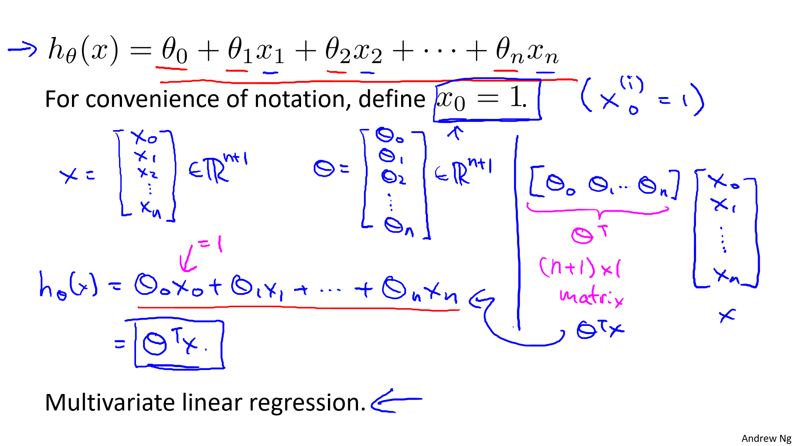
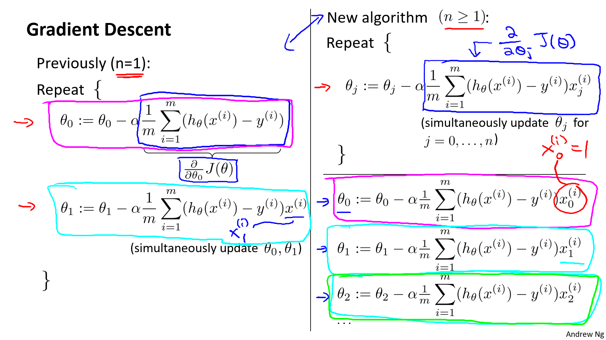
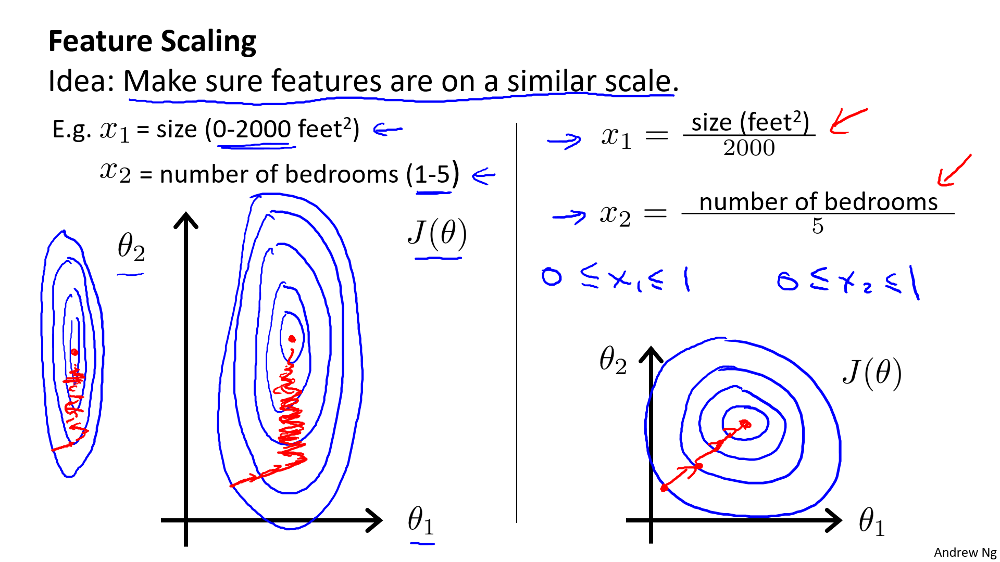
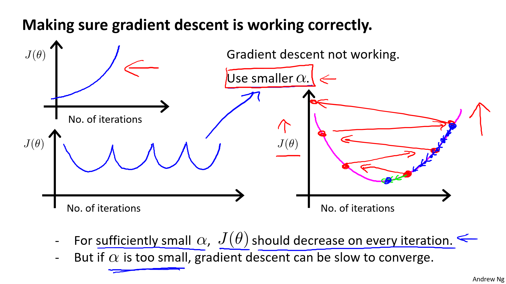
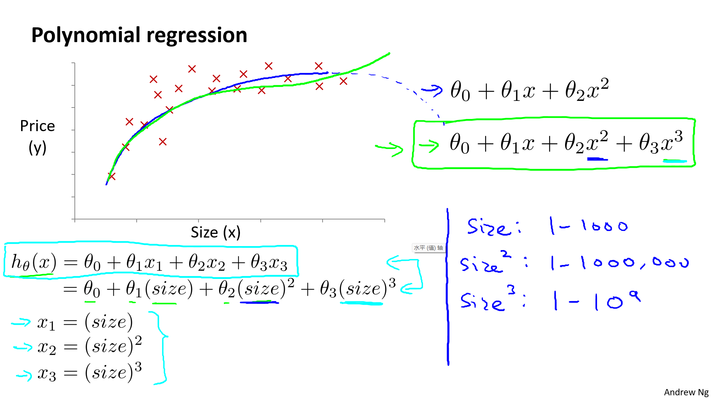
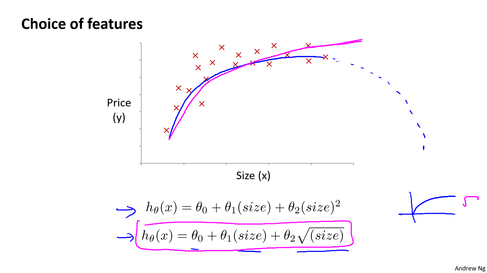
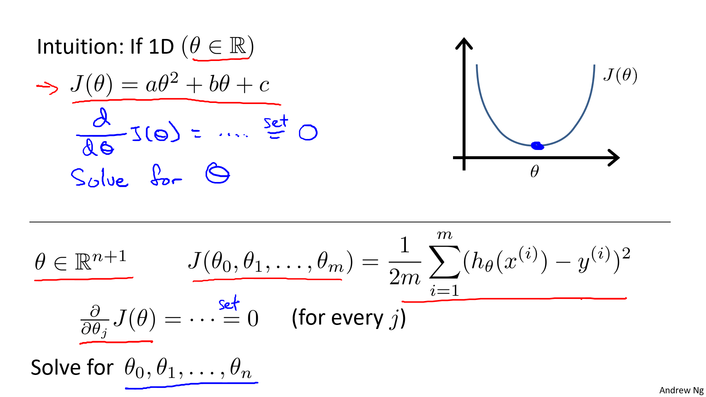
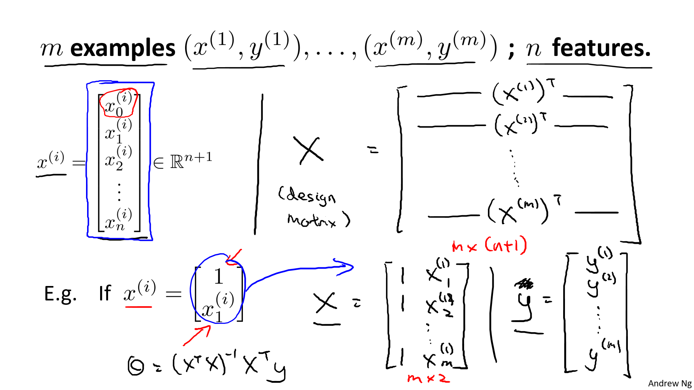

二. 多变量线性回归
1. 多维特征
参考视频: 4 - 1 - Multiple Features (8 min).mkv
目前为止，我们探讨了单变量/特征的回归模型，现在我们对房价模型增加更多的特征，例如房间数楼层等，构成一个含有多个变量的模型，模型中的特征为\(\left( {x_{1}},{x_{2}},...,{x_{n}} \right)\)。
| Size (feet2) | Number of bedrooms | Number of floors | Age of home (years) | Price ($1000) |
|---|---|---|---|---|
| 2104 | 5 | 1 | 45 | 460 |
| 1416 | 3 | 2 | 40 | 232 |
| 1534 | 3 | 2 | 30 | 315 |
| 852 | 2 | 1 | 36 | 178 |
| … | … | … | … | … |
增添更多特征后，我们引入一系列新的注释：
\(n\) 代表特征的数量
\({x^{\left( i \right)}}\) 代表第 \(i\) 个训练实例，是特征矩阵中的第\(i\)行，是一个向量（vector）。
比方说，上图的
\({x}^{(2)}\text{=}\begin{bmatrix} 1416\\\ 3\\\ 2\\\ 40 \end{bmatrix}\)，
\({x}_{j}^{\left( i \right)}\)代表特征矩阵中第 \(i\) 行的第 \(j\) 个特征，也就是第 \(i\) 个训练实例的第 \(j\) 个特征。
如上图的\(x_{2}^{\left( 2 \right)}=3,x_{3}^{\left( 2 \right)}=2\)，
支持多变量的假设 \(h\) 表示为：\(h_{\theta}\left( x \right)={\theta_{0}}+{\theta_{1}}{x_{1}}+{\theta_{2}}{x_{2}}+...+{\theta_{n}}{x_{n}}\)，
这个公式中有\(n+1\)个参数和\(n\)个变量，为了使得公式能够简化一些，引入\(x_{0}=1\)，则公式转化为：\(h_{\theta} \left( x \right)={\theta_{0}}{x_{0}}+{\theta_{1}}{x_{1}}+{\theta_{2}}{x_{2}}+...+{\theta_{n}}{x_{n}}\)

此时模型中的参数是一个\(n+1\)维的向量，任何一个训练实例也都是\(n+1\)维的向量，特征矩阵\(X\)的维度是 \(m*(n+1)\)。 因此公式可以简化为：\(h_{\theta} \left( x \right)={\theta^{T}}X\)，其中上标 \(T\) 代表矩阵转置。
注意： 从上图可知, \(\theta\), \(X\) 我们是用列向量来标记。计算 \(h_{\theta}\left( x \right)={\theta_{0}}+{\theta_{1}}{x_{1}}+{\theta_{2}}{x_{2}}+...+{\theta_{n}}{x_{n}}\) 的时候, 可以将 \(h\) 表示为 \(\theta^TX.\)
2. 多变量梯度下降
参考视频: 4 - 2 - Gradient Descent for Multiple Variables (5 min).mkv
快速回顾我们的记号，并用向量简化。
Hypothesis: \(h_\theta(x)=\theta_0+\theta_1x+\theta_2x+...+\theta_nx\)
简记为： \(h_\theta(x)=\theta^TX\)
Parameters: \(\theta_0,\theta_1,\theta_2,...\theta_n\)
简记为：\(\theta\), \(n+1\ dimension\ vector\)
Cost Function:
简记为：
Gradient descent: Repeat {
\({\theta_{j}}:={\theta_{j}}-\alpha\frac{\partial}{\partial\theta_j}J(\theta_0,...\theta_n)\)
} (simultaneously update for every j=0, 1, 2, ..., n) 简记为：把上面的\(J(\theta_0,...\theta_n)\)换成\(J(\theta)\)

与单变量线性回归类似，在多变量线性回归中，我们也构建一个代价函数，则这个代价函数是所有建模误差的平方和，即：\(J\left( {\theta_{0}},{\theta_{1}}...{\theta_{n}} \right)=\frac{1}{2m}\sum\limits_{i=1}^{m}{{{\left( h_{\theta} \left({x}^{\left( i \right)} \right)-{y}^{\left( i \right)} \right)}^{2}}}\) ，
其中：\(h_{\theta}\left( x \right)=\theta^{T}X={\theta_{0}}+{\theta_{1}}{x_{1}}+{\theta_{2}}{x_{2}}+...+{\theta_{n}}{x_{n}}\) ，
我们的目标和单变量线性回归问题中一样，是要找出使得代价函数最小的一系列参数。 多变量线性回归的批量梯度下降算法为：
当\(n>=1\)时， \({{\theta }_{0}}:={{\theta }_{0}}-a\frac{1}{m}\sum\limits_{i=1}^{m}{({{h}_{\theta }}({{x}^{(i)}})-{{y}^{(i)}})}x_{0}^{(i)}\)
\({{\theta }_{1}}:={{\theta }_{1}}-a\frac{1}{m}\sum\limits_{i=1}^{m}{({{h}_{\theta }}({{x}^{(i)}})-{{y}^{(i)}})}x_{1}^{(i)}\)
\({{\theta }_{2}}:={{\theta }_{2}}-a\frac{1}{m}\sum\limits_{i=1}^{m}{({{h}_{\theta }}({{x}^{(i)}})-{{y}^{(i)}})}x_{2}^{(i)}\)
...
\({{\theta }_{n}}:={{\theta }_{n}}-a\frac{1}{m}\sum\limits_{i=1}^{m}{({{h}_{\theta }}({{x}^{(i)}})-{{y}^{(i)}})}x_{n}^{(i)}\)
我们开始随机选择一系列的参数值，计算所有的预测结果后，再给所有的参数一个新的值，如此循环直到收敛。
代码示例：
计算代价函数 \(J\left( \theta \right)=\frac{1}{2m}\sum\limits_{i=1}^{m}{{{\left( {h_{\theta}}\left( {x^{(i)}} \right)-{y^{(i)}} \right)}^{2}}}\) 其中：\({h_{\theta}}\left( x \right)={\theta^{T}}X={\theta_{0}}{x_{0}}+{\theta_{1}}{x_{1}}+{\theta_{2}}{x_{2}}+...+{\theta_{n}}{x_{n}}\)
Python 代码：
def computeCost(X, y, theta):
inner = np.power(((X * theta.T) - y), 2)
return np.sum(inner) / (2 * len(X))
下面，我们开始推导\(\frac{\partial}{\partial\theta}J(\theta)\)。这里为了普遍性，还原了 \(\theta\) 的普遍情况，也即有n个 \(\theta\) 的情况。
Hypothesis: \(h_\theta(x)=\theta^Tx=\theta_0x_0+\theta_1x_1+\theta_2x_2+...+\theta_nx_n\)
Parameters: \(\theta_0,\theta_1,...,\theta_n\)
Cost function:
Gradient descent: Repeat{ $$ \theta_j :=\theta_j-\alpha\frac{\partial}{\partial \theta_j}J(\theta_0,\theta_1,...,\theta_n) $$ }（simultaneously update for every j=0, 1, 2, ..., n)）
推导： \(\frac{\partial}{\partial \theta_j}J(\theta_0,\theta_1,...,\theta_n)=?\)
Let's first work it for the case if we have only one training example \((x,y)\), so that we can neglect the sum in the definition \(J\). We have: $$ \begin{split} \frac{\partial}{\partial \theta_j}J(\theta_0,\theta_1,...,\theta_n) & = \frac {1} {2}\frac{\partial}{\partial \theta_j}\Big(h_\theta(x)-y\Big)^2 \\ & = 2\cdot\frac{1}{2}\cdot(h_\theta(x)-y)\cdot\frac{\partial}{\partial \theta_j}(h_\theta(x)-y) \\ & = (h_\theta(x)-y)\cdot\frac{\partial}{\partial \theta_j}(\theta_0x_0+\theta_1x_1+\theta_2x_2+...+\theta_nx_n) \\ & = (h_\theta(x)-y)\cdot x_j \end{split} $$
3. 梯度下降法 - 特征缩放
参考视频: 4 - 3 - Gradient Descent in Practice I - Feature Scaling (9 min).mkv
在我们面对多维特征问题的时候，我们要保证这些特征都具有相近的尺度，这将帮助梯度下降算法更快地收敛。
以房价问题为例，假设我们使用两个特征，房屋的尺寸和房间的数量，尺寸的值为 0-2000平方英尺，而房间数量的值则是0-5，以两个参数分别为横纵坐标，绘制代价函数的等高线图能，看出图像会显得很扁，梯度下降算法需要非常多次的迭代才能收敛。 解决的方法是尝试将所有特征的尺度都尽量缩放到-1到1之间。如图：

视频里吴恩达老师的方法是令：\({{x}_{n}}=\frac{{{x}_{n}}-mean}{{max(x)-min(x)}}\), 其中 \(mean\)是平均值，\(max(x)-min(x)\)分别是最大值和最小值。
更通用的是令：\({{x}_{n}}=\frac{{{x}_{n}}-{mean}}{\sigma}\)，其中 \(mean\)是平均值，\(\sigma\)是标准差。
python里的api：
-
sklearn.preprocessing.StandardScaler()
- 处理之后每列来说所有数据都聚集在均值0附近标准差差为1
- StandardScaler.fit_transform(X)
- X:numpy array格式的数据[n_samples,n_features]
- 返回值：转换后的形状相同的array
部分参考代码：
from sklearn.datasets import load_boston
from sklearn.model_selection import train_test_split
from sklearn.preprocessing import StandardScaler
from sklearn.linear_model import LinearRegression
from sklearn.metrics import mean_squared_error
def linear_model1():
# 1.获取数据
boston = load_boston()
# 2. 数据集划分
x_train, x_test, y_train, y_test = train_test_split(
boston.data, boston.target, test_size=0.2)
# 3. 特征工程-标准化
transfer = StandardScaler()
x_train = transfer.fit_transform(x_train)
x_test = transfer.fit_transform(x_test)
4. 梯度下降法 - 学习率
参考视频: 4 - 4 - Gradient Descent in Practice II - Learning Rate (9 min).mkv
梯度下降算法收敛所需要的迭代次数根据模型的不同而不同，我们不能提前预知，我们可以绘制迭代次数和代价函数的图表来观测算法在何时趋于收敛。

也有一些自动测试是否收敛的方法，例如将代价函数的变化值与某个阀值（例如0.001）进行比较，但通常看左上方这样的图表更好。
不正确的学习率，会产生左侧上下两个图像。 
梯度下降算法的每次迭代受到学习率的影响，如果学习率 \(\alpha\) 过小，则达到收敛所需的迭代次数会非常高；如果学习率 \(\alpha\) 过大，每次迭代可能不会减小代价函数，可能会越过局部最小值导致无法收敛。
通常可以考虑尝试些学习率：
\(\alpha= 0.001, 0.003, 0.01, 0.03, 0.1, 0.3, 1, 3, 10\)
5. 特征和多项式回归
参考视频: 4 - 5 - Features and Polynomial Regression (8 min).mkv
如房价预测问题，
\(h_{\theta}\left( x \right)={\theta_{0}}+{\theta_{1}}\times{frontage}+{\theta_{2}}\times{depth}\)
当我们真正应用线性回归模型的时候，我们可以创造自己的特征即： \({x_{1}}=frontage\)（临街宽度），\({x_{2}}=depth\)（纵向深度），\(x=frontage*depth=area\)（面积）， 则：\({h_{\theta}}\left( x \right)={\theta_{0}}+{\theta_{1}}x\)。

线性回归并不适用于所有数据，有时我们需要其他模型来适应我们的数据，比如一个二次方模型：\(h_{\theta}\left( x \right)={\theta_{0}}+{\theta_{1}}{x_{1}}+{\theta_{2}}{x_{2}^2}\) 或者三次方模型： \(h_{\theta}\left( x \right)={\theta_{0}}+{\theta_{1}}{x_{1}}+{\theta_{2}}{x_{2}^2}+{\theta_{3}}{x_{3}^3}\)
从上面图右侧，可以看出如果我们采用多项式回归模型，在运行梯度下降算法前特征缩放的重要性了。
通常我们需要先观察数据然后再决定准备尝试怎样的模型。 另外，我们可以令：
\({{x}_{2}}=x_{2}^{2},{{x}_{3}}=x_{3}^{3}\)，从而将模型转化为线性回归模型。
根据函数图形特性，我们还可以使：
\({{{h}}_{\theta}}(x)={{\theta }_{0}}\text{+}{{\theta }_{1}}(size)+{{\theta}_{2}}{{(size)}^{2}}\)
或者:
\({{{h}}_{\theta}}(x)={{\theta }_{0}}\text{+}{{\theta }_{1}}(size)+{{\theta }_{2}}\sqrt{size}\)

6. 正规方程
参考视频: 4 - 6 - Normal Equation (16 min).mkv
到目前为止，我们都在使用梯度下降算法，但是对于某些线性回归问题，正规方程方法是更好的解决方案。如：

正规方程是通过求解下面的方程来找出使得代价函数最小的参数的：\(\frac{\partial}{\partial{\theta_{j}}}J\left( {\theta_{j}} \right)=0\) 。 假设我们的训练集特征矩阵为 \(X\)（包含了 \({{x}_{0}}=1\)）并且我们的训练集结果为向量 \(y\)，则利用正规方程解出向量 \(\theta ={{\left( {X^T}X \right)}^{-1}}{X^{T}}y\) 。
以下面表格数据为例 \(m=4\)：
| \(x_0\) | Size (feet2) | Number of bedrooms | Number of floors | Age of home (years) | Price ($1000) |
|---|---|---|---|---|---|
| 1 | 2104 | 5 | 1 | 45 | 460 |
| 1 | 1416 | 3 | 2 | 40 | 232 |
| 1 | 1534 | 3 | 2 | 30 | 315 |
| 1 | 852 | 2 | 1 | 36 | 178 |
\(X\ \text{=}\begin{bmatrix}1 & 2104 & 5 & 1 & 45\\1 & 1416 & 3 & 2 & 40\\ 1 &1534 & 3 & 2 & 30\\ 1 & 852 & 2 & 1 & 36\end{bmatrix}\)，\(y\ \text{=}\begin{bmatrix} 460\\232\\315\\178\end{bmatrix}\)
\(X维度：(m,n+1),\ y的维度：(m,1)\)
这时候求解 \(\theta\) 只需一步: \(\theta ={{\left( {X^T}X \right)}^{-1}}{X^{T}}y\)。
将上面的例子推广到一般情况

注：对于那些不可逆的矩阵（通常是因为特征之间不独立，如同时包含英尺为单位的尺寸和米为单位的尺寸两个特征，也有可能是特征数量大于训练集的数量），正规方程方法是不能用的。 千万要注意这里的设计矩阵X它的构成，设计完成后，假设函数可以向量化为 \(h_\theta(x)=X\theta\)
梯度下降与正规方程的比较：
| 梯度下降 | 正规方程 |
|---|---|
| 需要选择学习率\(\alpha\) | 不需要 |
| 需要多次迭代 | 一次运算得出 |
| 当特征数量\(n\)大时也能较好适用 | 需要计算\({{\left( {{X}^{T}}X \right)}^{-1}}\) 如果特征数量n较大则运算代价大，因为矩阵逆的计算时间复杂度为\(O\left( {{n}^{3}} \right)\)，通常来说当\(n\)小于10000 时还是可以接受的 |
| 适用于各种类型的模型 | 只适用于线性模型，不适合逻辑回归模型等其他模型 |
总结一下，只要特征变量的数目并不大，标准方程是一个很好的计算参数$\theta $的替代方法。具体地说，只要特征变量数量小于一万，我通常使用正规方程法，而不使用梯度下降法。
随着我们要讲的学习算法越来越复杂，例如，当我们讲到分类算法，像逻辑回归算法，我们会看到，实际上对于那些算法，并不能使用标准方程法。对于那些更复杂的学习算法，我们将不得不仍然使用梯度下降法。因此，梯度下降法是一个非常有用的算法，可以用在有大量特征变量的线性回归问题。或者我们以后在课程中，会讲到的一些其他的算法，因为标准方程法不适合或者不能用在它们上。但对于这个特定的线性回归模型，标准方程法是一个比梯度下降法更快的替代算法。所以，根据具体的问题，以及你的特征变量的数量，这两种算法都是值得学习的。
正规方程的python实现：
import numpy as np
def normalEqn(X, y):
theta = np.linalg.inv(X.T@X)@X.T@y #X.T@X等价于X.T.dot(X)
return theta
以下是正规方程英文版(有详细推导-自己加上的)，其他内容来源于2006年麻省理工cs 2009机器学习的note。
7. The normal equations
Gradient descent gives one way of minimizing \(J\). Lets discuss a second way of doing so, this time performing the minimization explicitly and without resorting to an iterative algorithm. In this method, we will minimize \(J\) by explicitly taking its derivatives with respect to the \(θ_j's\), and setting them to zero. To enable us to do this without having to write reams of algebra and pages full of matrices of derivatives, lets introduce some notation for doing calculus with matrices.
7.1 Matrix derivatives
For a function \(f\) : \(\mathbb{R^{m\times n}} \rightarrow \mathbb{R}\) mapping from \(\text{m-by-n}\) matrices to the real numbers, we define the derivative of f with respect to A to be:
Thus, the gradient \(\nabla _Af(A)\) is itself an \(\text{m-by-n}\) matrix, whose \((i,j)\)-element is \(\frac{\partial f}{\partial A_{ij}}\). For example, suppose \(A =\bigl( \begin{smallmatrix} A_{11} & A_{12} \\ A_{21} & A_{22} \end{smallmatrix} \bigr)\) is a 2-by-2 matrix, and the function \(f\): \(\mathbb{R^{2\times 2}}\rightarrow \mathbb{R}\) is given by
Here, \(A_{ij}\) denotes the \((i,j)\) entry of the matrix \(A\). We then have
We also introduce the trace opertator, written by "tr.". For an \(\text{n-by-n}\) (square) matrix A, the trace of A is defined to be the sum of its diagonal entries:
If \(a\) is a real number (i.e., a 1-by-1 matrix), then \(\operatorname{tr} a = a\). (If you haven't seen this "opertator notation" before, you should think of the trace of \(A\) as \(\operatorname{tr}(A)\), or as application of the "trace" function to the matrix \(A\). It's more commonly written without the parentheses, however.） The trace opertator has the property that for two matrices \(A\) and \(B\) such that \(AB\) is square, we have that \(\operatorname{tr}(AB)=\operatorname{tr}(BA)\). 证明请查看机器学习中的数学知识中关于迹的交换律的证明。 As corollaries of this, we also have, e.g.,
The following properties of the trace operator are also easily verified. Here, \(A\) and \(B\) are square matrices, and \(a\) is a real number:
We now state without proof some facts of matrix derivatives (we won’t need some of these until later this quarter). Equation (4) applies only to non-singular square matrices A, where |A| denotes the determinant of A. We have:
吴恩达老师不给你们证明，我来给你们证明
请在看下面推导之前, 务必先看懂我这个知识库中机器学习中的数学知识 --- ( 一. 矩阵求导本质 &二. 矩阵求导)。
I. \(\nabla_A \operatorname{tr}(AB)=B^T\)
证明:
由 二.矩阵求导中---(6)式的证明 我们可以知道：
对于两个阶数都是 \(m \times n\) 的矩阵 \(C_{m \times n}, D_{m \times n}\) 其中一个矩阵乘以（左乘右乘都可以）另一个矩阵的 转置 的迹，本质是 \(C_{m \times n}, D_{m \times n}\) 两个矩阵对应位置的元素相乘并相加。
所以这里 \(\operatorname{tr}(AB)\) 相当于就是 \(A\) 和 \(B^T\) 每一个位置对应元素 相乘并相加 。 其中, \(A_{m \times n}, B_{n \times m}\)。
接着, 由 二.矩阵求导本质---(11)式 我们可以知道:
这里求 \(\nabla_A \operatorname{tr}(AB)\) 相当于 \(\operatorname{tr}(AB)\) 按照 \(A\) 矩阵分布的每个位置元素求偏导。
所以, 综上所述, \(\nabla_A \operatorname{tr}(AB)=B^T\)。
证毕。
II. \(\nabla_{A^T}f(A) = \big(\nabla_Af(A)\big)^T\)
证明:
由 二.矩阵求导本质---(11)式 可知:
证毕。
III. \(\nabla_A \operatorname{tr}ABA^TC=CAB+C^TAB^T\)
证明:
首先, 我们要明确这里的 \(ABA^TC\) 是关于 \(A\) 矩阵的实值标量函数, 所以, 我们可以令 \(f(A)=ABA^TC\)。
注意: 这里的标记, 由于 \(A\) 其实是矩阵变元, 应该标记为 \(f(\pmb A)=\pmb A B \pmb A^TC\), 所以后面的推导过程,我们严谨一些, 将矩阵变元 \(A\) 标记为 \(\pmb A\)。
仔细想你会发现，对于实值标量函数 \(f (\pmb{A})\), \(\operatorname{tr}\big( f(\pmb A) \big)=f(\pmb A)\) , \(\mathbb{d}f(\pmb A)=\operatorname{tr}\big( \mathbb{d}f(\pmb A) \big)\)
所以有 \(\mathbb{d}f(\pmb A)=\mathbb{d}\big(\operatorname{tr}f(\pmb A)\big)=\operatorname{tr}\big( \mathbb{d}f(\pmb A) \big)\) 。
由 二.矩阵求导本质---(24)式 即:
我们可以把一个矩阵变元的实值标量函数的全微分写成上式，我们就找到了矩阵求导的结果, 也即:
由我们证明的 II. \(\nabla_{A^T}f(A) = \big(\nabla_Af(A)\big)^T\)得:
所以我们要求的:
最终我们的任务就是转化为求 \(\mathbb{d}f(\pmb{A})\) 的全微分, 下面开始推导：
数字是步骤 汉字是每一步依据
01 -> 02 实值标量函数的性质
02 -> 03 迹的交换律
03 -> 04 实值标量函数的性质
04 -> 05 矩阵微分的乘积法则
05 -> 06 夹层饼
06 -> 07 迹的线性法则, 迹的交换律
07 -> 08 矩阵微分的转置法则
08 -> 09 转置的迹等于原矩阵的迹
09 -> 10 迹的交换律
10 -> 11 迹的线性法则
结合前面的 \((II.1)\) 式可得:
再结合前面的 \((II.1)\) 式可得:
证毕。
IV. \(\nabla_A|A|=|A|(A^{-1})^T\\\\\)
证明:
由 矩阵行列式微分 即(25.2.1)式的证明可知:
再由 二.矩阵求导本质---(24)式可得：
因此,
证毕。